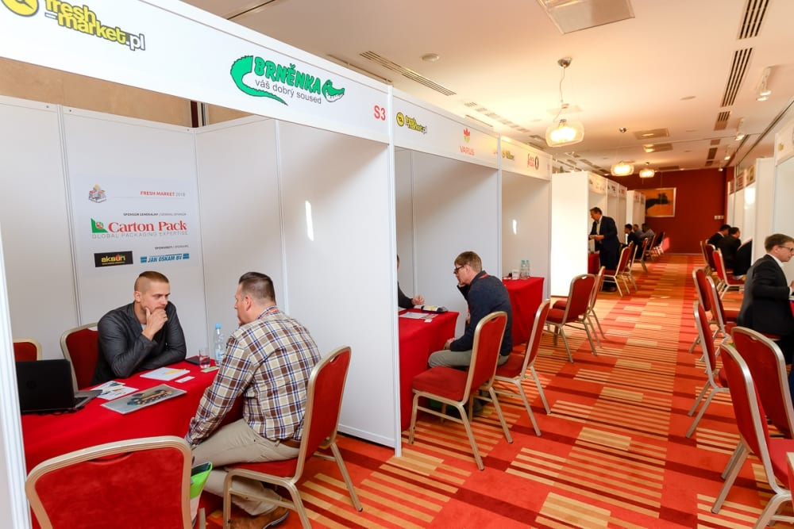

| ||
|
 | ||
| Zdjęcie archiwalne: rozmowy B2B na Fresh Market | ||
|
Zaprezentuj swoją firmę kupcom online
Pierwszy krok do nowej sieci handlowej.Dzień dobry, Sad Kowalski, Chcesz przedstawić swoją firmę kupcom wybranych sieci? Przygotuj propozycję w PreConnect i pokaż swoje produkty oraz możliwości współpracy. | ||
| ||
| Nie wiesz, od czego zacząć? Odpowiedz na tę wiadomość — pomożemy Ci opisać asortyment i wybrać sieci. | ||
| ||
|
KJOW Sp. z o.o. · ul. Marii 17/25, 05-803 Pruszków, Polska
b2b.freshmarket.eu Odpowiedz na tę wiadomość albo napisz na preconnect@freshmarket.eu.
Otrzymujesz tę wiadomość jako operator konta dostawcy w Fresh Market B2B. Wypisz się z informacji o PreConnect. |